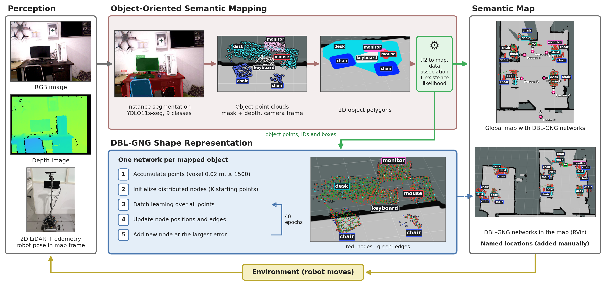
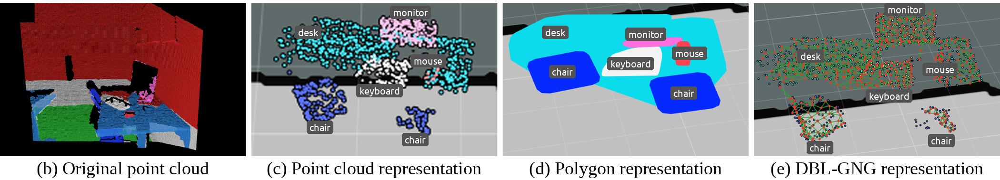
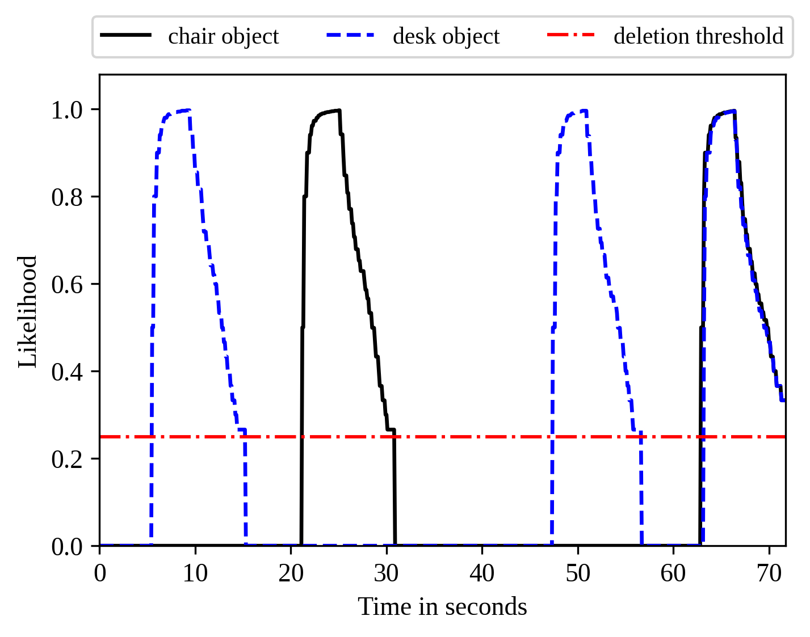
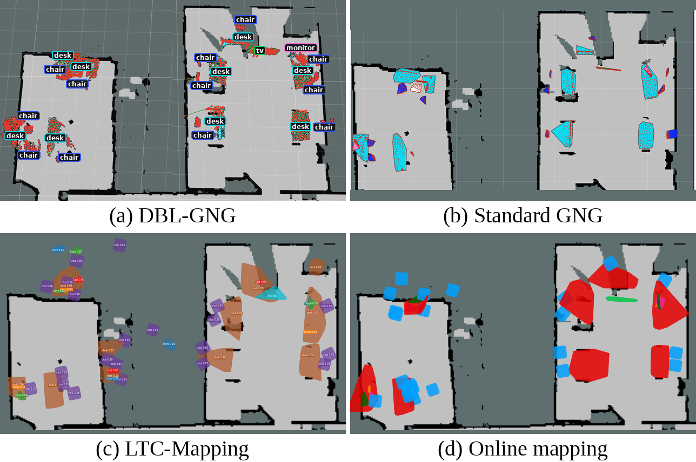

Indoor robots need maps that record not only free and occupied space but also the identity and location of objects. This paper presents a ROS 2 pipeline in which a YOLO11s-seg model segments nine object classes in the images of an RGB-D camera, and the instance masks select the depth pixels of each object before any geometry is built. The pixels become object point clouds in the map frame, managed in a global semantic map through data association and an existence likelihood, while a Distributed Batch Learning Growing Neural Gas (DBL-GNG) network gives each object a shape graph and trains a median of 6.9 times faster than a standard GNG. On the validation set, the model reached a mask mAP50 of 0.808. Valid depth pixels inside the masks averaged 94.4% at 1.0–1.5 m but only 28.2% at 3.0–4.5 m. In a real laboratory, polygons built from the DBL-GNG graphs gave the lowest Hausdorff distance (0.391 m) and center-of-mass distance (0.195 m) and the highest precision and F1-score (86.21%) among four methods, with 25 of 29 reference objects mapped correctly. The comparison is indicative: the runs are mostly single, and the baselines are re-implementations with a different matching rule.




The code release contains the DBL-GNG stage of the pipeline as a ROS 2 Humble package. The segmentation, point cloud, polygon and map fusion nodes are not part of the release.
dbl_gng_objects: accumulates the points of each mapped object and publishes one network of nodes and edges per objectdbl_gng_core.py: port of CornerSiow/DBL-GNG (MIT License); the package is released under Apache-2.0Repository: github.com/Bharata666/dbl-gng-semantic-mapping
If you find our work useful, please consider citing our paper:
Bharata Kukuh Hariyanto, Mohamad Yani, Moch. Iskandar Riansyah, Naoyuki Kubota, Fajar Hidayatullah, and Muhammad Rio Fernanda
Intelligent Robot Guidance: Mask-Based Object Perception and Semantic Mapping on an Indoor Guide Robot Using YOLO11s-seg and an RGB-D Camera
Manuscript, 2026.
(BibTeX)
@unpublished{hariyanto2026guidance,
title = {Intelligent Robot Guidance: Mask-Based Object Perception and Semantic Mapping on an Indoor Guide Robot Using YOLO11s-seg and an RGB-D Camera},
author = {Hariyanto, Bharata Kukuh and Yani, Mohamad and Riansyah, Moch. Iskandar and Kubota, Naoyuki and Hidayatullah, Fajar and Fernanda, Muhammad Rio},
year = {2026},
note = {Manuscript}
}